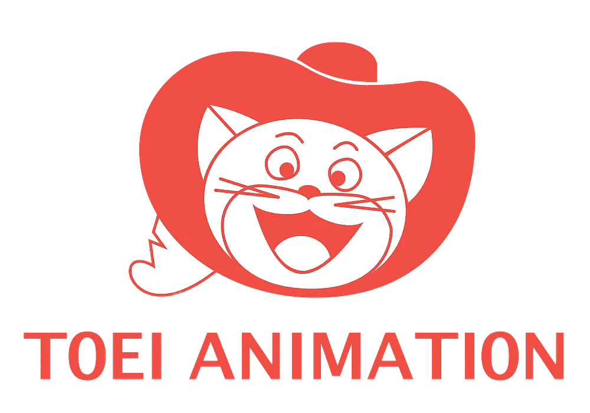

O Grand Line Festival é um evento criado para reunir fãs e aventureiros apaixonados pelo universo de One Piece. Aqui, cada participante pode embarcar em uma jornada repleta de diversão, criatividade e novas experiências. Prepare seu melhor cosplay e venha representar seu personagem favorito dos mares. O festival contará com atrações, apresentações e momentos especiais para toda a tripulação. Seja você um pirata, marinheiro ou simplesmente um grande fã, há um lugar para você nessa aventura. Reúna seus amigos, forme sua tripulação e prepare-se para explorar a Grand Line. Venha conhecer pessoas que compartilham da mesma paixão e celebrar esse universo incrível. O próximo grande tesouro pode estar esperando por você!

